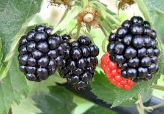

SZTR VOĆAR starts its own production, purchase and processing of fruits 2006th. when Mr. Miroljub Nedeljković has founded the company.
Cold store has 3 compartments for storage of frozen fruit, 2 classic tunnel freezer, with the atrium that is used form manual and semi manual sorting and packing of fruits, as well as a hall for the reception of fresh fruit and berries, and shipping of frozen fruit and berries.
Cold store is equipped with modern equipment for automatic temperature control, measuring instruments, hygiene and sanitary respects all demands of the Low.
SZTR VOĆAR is characterized by modern operating methods, ongoing training and regular visits to trade fairs at home and abroad.
SZTR VOĆAR is open for export, supporting and meeting the requirements of the European market.
SZTR VOĆAR has its orchards of plum, raspberry and blackberry which are under the supervision.
Cold store SZTR VOĆAR, with annual production of about 1,500 tons of frozen products every year, quality of work and quality of their products has consolidated its position in Serbia and beyond.

Google Map